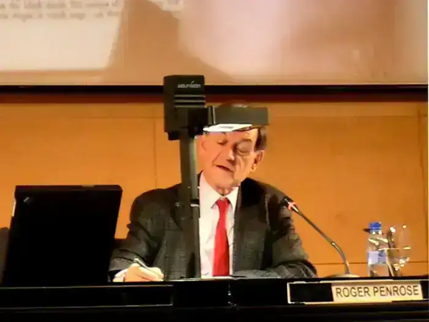

The proposal
Conformal cyclic cosmology holds that the universe passes through successive aeons, with the far future of one matching the big bang of the next. It predicts concentric circles in the cosmic microwave background from colliding black holes in a previous aeon.
Maps, diagrams and images


The evidence
Circles were claimed in 2010 and again in 2013, and independent analyses found them consistent with chance in the noise. The model has not produced a confirmed prediction, and it requires that mass be lost across the transition.
Documented: the model.
Claimed: circles in the CMB.
Not confirmed: by independent analysis.
Not established: as a theory.
The honest label: fringe.
Why it is in the archive
Because it is a serious physicist's speculation with a claimed signature that did not survive checking.
More images
Open resources on this topic
- PapersOpen-access articles: DOAJ · PubMed Central · Internet Archive Scholar
- BooksPublic-domain and borrowable copies: Open Library · Project Gutenberg · Google Books · Internet Archive
Cite this page
Momin, S. (2026). Penrose's Cycles. The Larger World Archive. https://drsamonline.github.io/LARGE_GLOBE/penrose-cycles.htmlMomin, Sohil. “Penrose's Cycles.” The Larger World Archive, 2026, https://drsamonline.github.io/LARGE_GLOBE/penrose-cycles.html.Momin, Sohil. “Penrose's Cycles.” The Larger World Archive, 2026. https://drsamonline.github.io/LARGE_GLOBE/penrose-cycles.html.@misc{penroses2026penrose,
author = {Momin, Sohil},
title = {Penrose's Cycles},
year = {2026},
howpublished = {The Larger World Archive},
url = {https://drsamonline.github.io/LARGE_GLOBE/penrose-cycles.html},
note = {Last reviewed 20 November 2026}
}Last reviewed 20 November 2026 · Corrections policy · this page is not peer reviewed
Sources for this page
- Wikipedia, “Conformal cyclic cosmology” — the modelen.wikipedia.org
- Wikipedia, “Cosmic microwave background” — the dataen.wikipedia.org
- Wikipedia, “Roger Penrose” — the authoren.wikipedia.org
- Wikipedia, “Cosmology” — the fielden.wikipedia.org